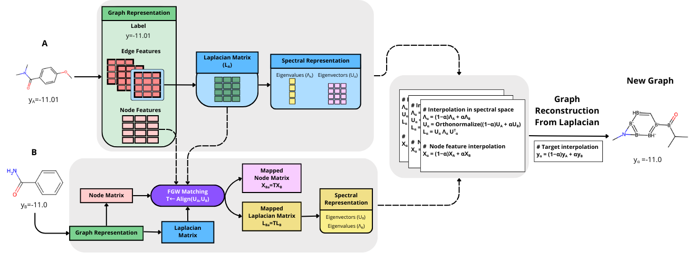
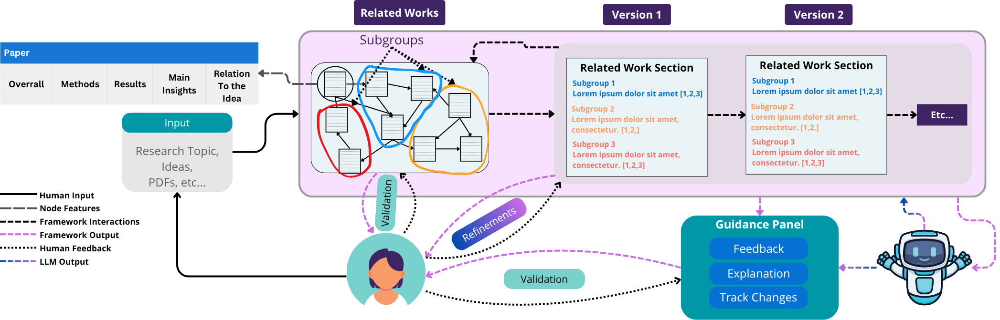

About me
I am a Ph.D. student in Computer Science and Engineering at the University of Notre Dame and a Graduate Researcher at the NSF Center for Computer-Assisted Synthesis (C-CAS). My research focuses on Generative AI and Machine Learning Foundations, with an emphasis on learning from imbalanced data for drug discovery, treatment response, and materials science, as well as the development of agentic AI systems that enhance human trust and collaboration.
Outside research I like to walk with my dog, dancing, and exploring new places.
Honors & Awards
- Scientific Artificial Intelligence (SAI) Graduate Fellowship — 2025
- NSF Center for Computed Assisted Synthesys Travel Award, 2025
- International Mathematics Without Borders Olympiad, Brazilian Section | Gold medal, 2016
Education
PhD in Computer Science and Engineer
University of Notre Dame — expected 2028
Advisors: Prof. Nitesh V. Chawla & Prof. Nuno Moniz.
MSc in Data Science
Thesis: Fish Size Measurement System for Long-Term Growth Studies in the Azores.
BSc in Mathematics with complementary education in Computer Science
News
- ECML-PKDD Presentation — Oral presentation at SoGood Workshop about Automated Fish Size Measurement System for Long-Term Growth Studies in the Azores.
- KDD Presentation — Poster presentation at MLoG-GenAI Workshop about Spectral Manifold Harmonization for Graph Imbalanced Regression.
- ICML Presentation — Poster presentation at DIG-BUGS Workshop about Spectral Manifold Harmonization for Graph Imbalanced Regression.
- Received SAI Graduate Fellowship — Starting Fall 2025 I'll be working on Graph Imbalanced Regression for Drug–Target prediction.
- NSF C-CAS Presentation — Presentation at NSF C-CAS annual meeting about Rethinking Evaluation in Compound Potency Prediction.
- EPIA Presentation — Presentation at EPIA Conference about Dynamics of Fisheries in the Azores Islands: A Network Analysis Approach.
Publications [Google Scholar]
Preprints and Under Submissions
- 
-

From Verification Burden to Trusted Collaboration: Design Goals for LLM-Assisted Literature Reviews (2026)
Peer-Reviewed Publications
-
Automated Fish Size Measurement System for Long-Term Growth Studies in the Azores (2025)
Selected Experiences
Please kindly find my full experience list on my CV.
Research Assistant — Lucy Institute for Data & Society
- Exploration of Artificial Intelligence challenges in graph-structured data, with a focus on imbalanced domains and chemistry data.
Research Fellow — INESCTEC
- Research Fellow at the CIBELE Project, dedicated to devising a comprehensive strategy for unraveling the intricacies inherent in cutting patterns, while also pioneering methods to anticipate and forecast complexity within novel pattern designs.
Research Fellow — FCUP
- Development of an automated email-entity association pipeline using natural language processing, text similarity, and entity linking methods. Scholarship financed by FCT.
Research Initiation Fellow — INESCTEC
- Development of a methodology for filling fissing information about landings in the OKEANOS dataset using machine learning and pre-processing strategies.
Projects
Spectral Manifold Harmonization for Graph Imbalanced Regression
Novel approach to address imbalanced regression challenges on graph-structured data by generating synthetic graph samples that preserve topological properties while focusing on the most relevant target distribution regions.
CodeAutomated Machine Learning
Online platform for public use of the existing automated machine learning method, developed during INECTEC intership.
CodeSleep Detection App
A web application for drowsiness detection developed during summer intership at INESCTEC.
Code